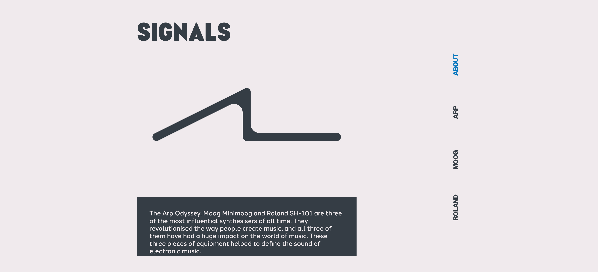
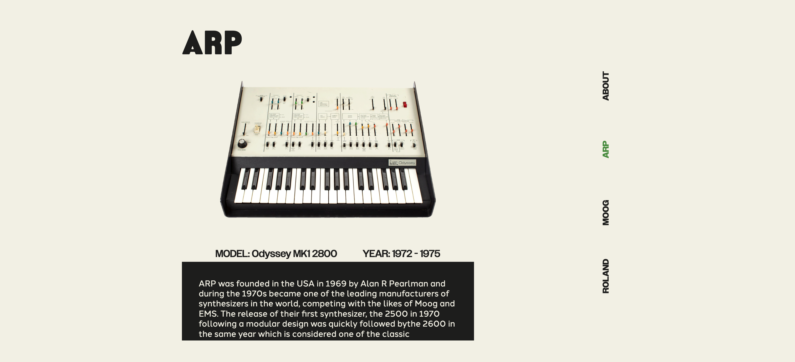
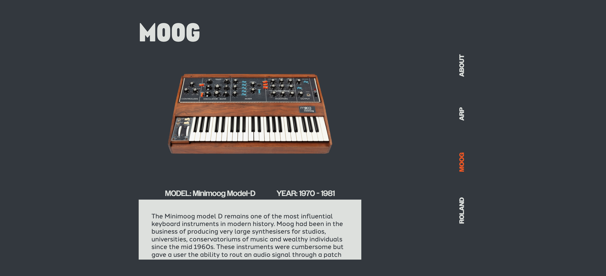

This project involved building a functional website using HTML and CSS. The concept revolved around an exploration and showcase of arguably three of the most revolutionary, influential, and important synthesisers in the world. The ARP Odyssey, Moog Minimoog and Roland SH-101.
Glitch
Illustrator
Photoshop
Visual Studio Code